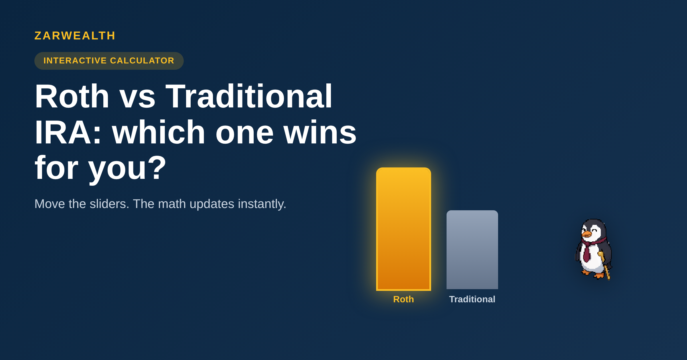

Roth vs Traditional IRA: Which One Actually Wins for You? (2026)
Use our free calculator to compare Roth vs Traditional IRA on your own numbers. See exactly when Traditional quietly wins at your tax bracket.
Z Zar · 02 Jun 2026 — 8 min read

Want to go deeper on this? See What Is a Brokerage Account vs an IRA.
Want to go deeper on this? See What Is a 401k and How Does It Work in 2026?.
Want to go deeper on this? See How to Retire 10 Years Early.
Roth vs Traditional IRA
Part of our Complete Investing Guide — the retirement-account cluster.
Most people are told the Roth IRA is the obvious winner. Tax-free withdrawals, no required distributions, money that grows untouched for decades — what's not to like? The math agrees more often than not. But "more often than not" is doing a lot of work in that sentence, and the cases where it's wrong are exactly the cases where the decision matters most.
Before we run any numbers — quick gut check: is your tax bracket today higher or lower than you expect it to be at 65? There's no wrong answer. Just notice your instinct, because that single guess decides almost everything that follows. Hold that thought.
Here's what this article does that most don't: instead of telling you "Roth wins," we give you the calculator we used to model it, let you move the sliders yourself, and show you the exact combination where Traditional quietly wins — even though nearly every blog post on the internet says otherwise.
The Decision at a Glance
| If this is you… | Lean toward | Why |
|---|---|---|
| Early-career, lower bracket now | Roth | Pay tax now while it's cheap; withdraw tax-free later. |
| Peak-earning years, high bracket now | Traditional | Take the deduction now if you'll drop brackets in retirement. |
| Expect higher future tax rates | Roth | Lock in today's rate before rates rise. |
| Genuinely unsure either way | Split / Roth tilt | Roth's flexibility breaks the tie. |
Last reviewed: June 2026
The one rule that decides almost everything
Strip away the jargon and the entire Roth-versus-Traditional question reduces to a single comparison: your tax rate now versus your tax rate when you withdraw. That's it. Everything else — the tax-free growth, the RMD rules, the five-year clocks — is a footnote next to that one comparison.
A Traditional IRA gives you a deduction today and taxes you on withdrawal. A Roth IRA taxes you today and gives you withdrawals tax-free. If your rate is identical in both periods, the two accounts produce mathematically identical after-tax results. Not similar — identical. That surprises people, so stay with us: the only thing that breaks the tie is a difference between your rate today and your rate later.
Take a second with that idea. If your tax rate now equals your rate at 65, both accounts give mathematically identical after-tax outcomes — and that surprises most people who assume one is simply "better." If that's landing differently than you expected, that's the right reaction. Keep reading.
So the real question isn't "which account is better." It's "will future-you be in a higher or lower tax bracket than present-you?" If higher, Roth. If lower, Traditional. The trouble is that nobody knows their future bracket with certainty — and that uncertainty is where the interesting decisions live.
If this matters to you, our free FI Checklist walks through the rest of the retirement decision — where these accounts fit, and what to fund first.
Try it yourself: the Roth vs Traditional calculator
Reading about tax brackets is one thing. Watching the verdict flip as you drag a slider is another. Below is the exact model we built — current age, annual contribution, your bracket today, and your expected bracket in retirement. Move the sliders and the math updates instantly. No email required, nothing saved, nothing sent.
Tell us what happened.
You moved the sliders. The numbers changed. Three quick questions: did the result surprise you? Did you find a combination where the verdict felt wrong? What other calculation would have helped you decide?
Drop a quick reaction in the comments below — public, takes ten seconds. Or hit reply to the email — private, write as much as you want.
Where Traditional quietly wins
If you played with the calculator, you probably found it: set your bracket today high — say 32% or 35% — and your retirement bracket lower, around 12% to 22%, and Traditional pulls ahead. This isn't a glitch. It's the whole point.
The classic case is a dual-income professional in their peak-earning years. Right now they're in the 32% bracket. In retirement, living off a paid-off house and a modest withdrawal rate, they might land in the 12% or 22% bracket. For them, the Traditional deduction today is worth more than the Roth's tax-free growth, because they're trading a 32-cent tax bill for a future 12-to-22-cent one. That's a good trade.
There's a subtler version too. The Traditional deduction is cash you didn't hand to the IRS this year. If you actually invest that tax savings — instead of spending it — Traditional gets a second engine the Roth doesn't have. Most people don't reinvest the savings, which is exactly why the standard advice leans Roth. The advice assumes you'll spend the refund. If you won't, the math shifts.
Pause. That last point trips people up: the Roth-wins consensus quietly assumes you won't be disciplined with the Traditional tax savings. If that assumption doesn't fit you, tell us in the comments — we'll work a clearer example into the next article in this cluster.
The tiebreakers that aren't about money
When the after-tax math is close, the decision comes down to features, not dollars. Three matter most.
First, no required minimum distributions. Traditional IRAs force you to start withdrawing at 73, whether you need the money or not — and those withdrawals are taxable. Roth IRAs have no RMDs during your lifetime, which makes them a cleaner tool for leaving money to heirs or simply controlling your own timeline.
Second, withdrawal flexibility. You can pull your Roth contributions (not earnings) at any time, tax- and penalty-free, because you already paid tax on them. That makes a Roth a quiet backup emergency fund in a way a Traditional IRA never can be. We don't recommend raiding it — but the option has real value.
Third, tax diversification. Nobody knows what tax rates will look like in 30 years. Holding both account types means you can choose, year by year in retirement, which bucket to draw from based on that year's brackets. If you genuinely can't predict your future rate — and most people can't — splitting contributions hedges the bet. That's not indecision. That's a strategy.
If you want to see where these accounts fit alongside the rest of your retirement setup, our guide on what a Roth conversion is and when to do it covers the move that lets you shift money between the two, and our breakdown of using a robo-advisor for retirement planning shows how to automate the whole thing. For the fund side of the decision, our best target date funds for 2026 comparison pairs naturally with either account.
So which one should you actually pick?
Here's the honest answer: it depends, and we'd rather you run your own numbers than take a blanket rule. But if you forced us to give defaults, here's how we'd lean.
If you're early in your career or in a relatively low bracket, choose Roth. You're paying tax at a rate you'll likely never see again once your income climbs. Lock it in. If you're in your peak-earning years and expect to drop brackets in retirement, the Traditional deduction is probably the better trade — provided you don't spend the tax savings. And if you genuinely can't call your future bracket, split your contributions or tilt Roth, because its flexibility and lack of RMDs break ties in its favor.
The one thing we'd push back on is the idea that there's a single right answer for everyone. There isn't. The right answer is the one that matches your bracket today against your best guess of your bracket later — which is exactly what the calculator above is for.
One book if you want to go deeper
The Simple Path to Wealth by JL Collins — the clearest plain-English case for what to actually hold inside your Roth or Traditional, once you've picked the account.
🛠️ Want more free tools like the calculator above? Browse our full set at zarwealth.tech/tools — all free, no signup.
Want the full picture? This is part of our Complete Investing Guide. And we'd love to hear: which slider combination flipped your verdict? That reader scenario becomes our next article — drop it in the comments or reply to the email. |
Get the free 6-page FI Checklist
A step-by-step roadmap to financial independence, plus weekly investing playbooks. Sent the moment you subscribe.
Send me the checklist →